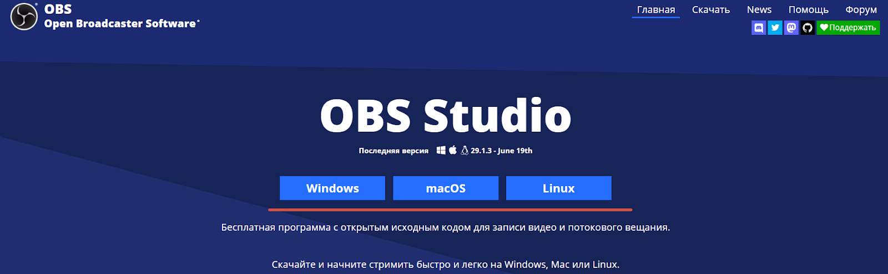
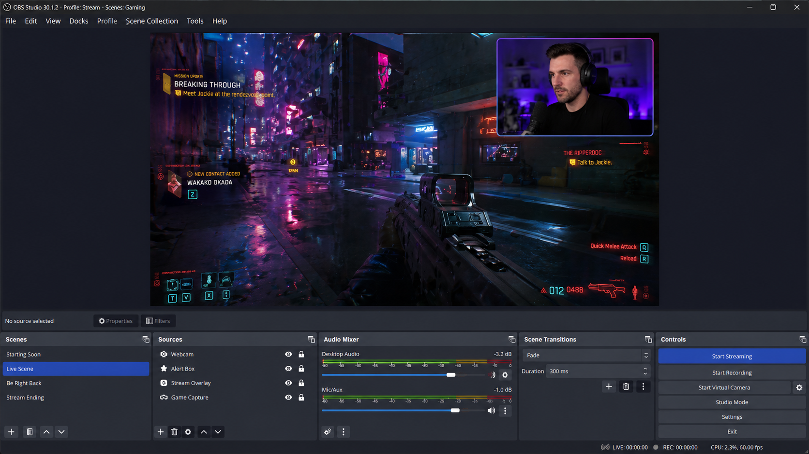

OBS Studio — мощный и бесплатный инструмент для записи и трансляции видео. В этом руководстве мы пройдём все этапы настройки OBS, чтобы вы могли запустить свой первый стрим менее чем за 15 минут.
📑 Содержание
Шаг 1: Установка OBS
Скачайте и установите программу
Перейдите на официальный сайт OBS и загрузите версию для вашей ОС. Запустите установщик и следуйте инструкциям — оставьте все параметры по умолчанию. После установки откройте OBS.

Шаг 2: Подключение аккаунта Twitch
Свяжите OBS с вашим Twitch каналом
Откройте Настройки → вкладка Трансляция. В поле «Сервис» выберите Twitch. Нажмите «Подключить учётную запись» — это самый простой способ. OBS автоматически получит ключ трансляции после авторизации.
🔐 Где найти ключ трансляции вручную?
Если вы хотите вставить ключ самостоятельно, зайдите в Twitch Dashboard → Настройки → Канал и видео. Скопируйте «Основной ключ трансляции» и вставьте его в поле «Ключ потока» в OBS. Никому не показывайте этот ключ!
Шаг 3: Создание сцены и добавление источников
Соберите сцену для стрима
В нижней левой панели «Сцены» нажмите + и назовите сцену, например «Игровая». Затем в панели «Источники» добавьте:
- Захват игры — выберите конкретное окно или «Захват любого полноэкранного приложения».
- Устройство захвата видео — ваша веб-камера.
- Аудио вход — микрофон.

Шаг 4: Настройка качества видео и звука
Перейдите в Настройки → Вывод и установите режим «Простой».
| Разрешение / FPS | Рекомендуемый битрейт | Кодировщик |
|---|---|---|
| 1080p 60 FPS | 6000 – 8000 Кбит/с | NVENC (NVIDIA) / AMF (AMD) |
| 1080p 30 FPS | 4500 – 6000 Кбит/с | NVENC / AMF / x264 |
| 720p 60 FPS | 3500 – 5000 Кбит/с | NVENC / AMF / QuickSync |
В разделе Видео установите Базовое разрешение и Выходное разрешение. Для большинства случаев 1920x1080 (базовое) и 1280x720 (выходное) — хороший баланс.
⚡ Совет по кодировщику
Если у вас видеокарта NVIDIA, обязательно выберите NVENC H.264. Он практически не нагружает процессор и даёт отличное качество.
Шаг 5: Запуск трансляции
Выходим в эфир!
Перед запуском проверьте, что игра захватывается, индикаторы звука двигаются, веб-камера работает. Нажмите «Запустить трансляцию». Поздравляем — вы в эфире! 🎉
🎯 Первый стрим — всегда волнительно. Не переживайте, если что-то пошло не так: вы всегда можете остановить трансляцию, поправить настройки и запустить снова.